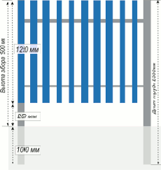
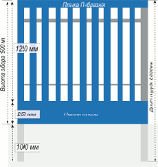

Заборные секции из профнастила
Компания «Тримет» стремится сделать работу с металлом более простой и доступной. Используя наши стеновые материалы и металлопрокат, Вы можете самостоятельно изготовить заборные секции.
Схемы заборных секций
 
Рекомендуемое расстояние между планками штакетника 50-60 мм (либо равное ширине планки).
Рекомендуемое число саморезов или заклепок для крепления - 4 шт. на 1 планку.
| Деталь | Материал | Длина |
|---|---|---|
| Вертикальный столб | Труба круглая 76 мм, Труба НКТ б/у 73 мм, Труба профильная 60 х 60 мм | 2,5 м |
| Прожилины | Труба профильная 40 × 20 мм | 2,5 - 3 м |
| Заполнение | Металлоштакетник ТР 70, ТР 80, ТР 90 | 1,25 м |
| Нижнняя панель | Лист оцинкованный с полимерным покрытием 0,45-0,5 мм с элементами гибки | 2,5 - 3 м |
|
Схема заборной секции |
При изготовлении типичных заборных секций используется: |

{kind=link}
{kind=link}
| Деталь | Материал | Размер |
|---|---|---|
| Вертикальный столб | Труба профильная 80 × 80 мм Труба круглая 76, 89 мм |
3 м |
| Прожилины | Труба профильная 40 × 40 мм, 40 × 20 мм | 3 м |
| Заполнение |
Профнастил:
|
1,2 × 2 (1,8) м |
Купить Онлайн
Отдел продаж
+7 (3452) 520-670 (71, 72, 73, 74)
+7 (3452) 520-670 (71, 72, 73, 74)